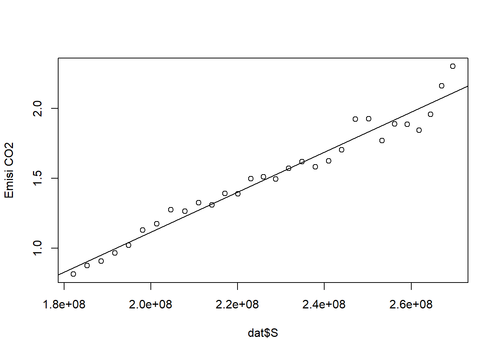

Melihat hubungan pertumbuhan GDP dengan perkembangan Emisi CO2
Tugas Pengganti UAS Metode Penelitian Politeknik APP Jakarta
Author
Fatih Muhammad Aldian
Published
January 19, 2023
1 Pendahuluan
1.1 Latar belakang
Di era modern ini, kita sangat bergantung kepada teknologi yang rata-rata menggunakan tenaga fosil (tidak terbarukan). Banyak dari kita yang kurang peduli bahwa teknologi yang saat ini masih kita pakai dan temui sehari-hari menghasilkan polusi udara yang dapat merusak lapisan ozon bumi, yaitu emisi karbon atau Emisi Co2. Banyak sektor penyumbang karbon dioksida, terutama disebabkan oleh karbon dioksida berbahaya yang dipancarkan dari pembangkit listrik tenaga batu bara dan gas. Bila hal ini kita sepelekan maka dampak negatifnya akan sangat berakibat fatal bagi umat manusia dan bagi bumi. Contoh seperti sekarang yang sudah terjadi adalah pemanasan global yang mengakibatkan pergantian cuaca yang ekstrim, dan juga menipisnya lapisan ozon yang melindungi kita dari efek buruk sinar matahari.
Namun dilain sisi, perkembangan teknologi tidak selalu membawakan dampak negatif pada alam, perkembangan teknologi juga memberikan dampak positif bagi Penerimaan Domestik Negara (PDB) Indonesia. Sehingga penulis terpikir apakah perkembangan PDB akan selalu membawa dampak negatif pada alam, karena ketika PDB perkapita tinggi yang mana menandakan bahwa penerimaan rata-rata pertahun masyarakat Indonesia juga ikut meningkat. Karena seperti yang telah penulis singgung sedikit diawal latar belakang, kita sangat bergantung kepada teknologi yang rata-rata menggunakan tenaga fosil yang mana ketika GDP perkapita naik, jumlah permintaan pada barang-barang yang memproduksi emisi Co2 pun akan ikut meningkat.
1.2 Ruang lingkup
Bagian ini menguraikan batasan ruang lingkup bahasan permasalahan pada laporan, dapat berupa batasan waktu maupun topik yang dibahas. Biasanya pertanyaan dan batasan penelitian ada di sini.
1.3 Batasan masalah
a. Data yang digunakan dari tahun 1990 s/d 2019 karena keterbatasan salah satu data.
b. Hanya mencari tau apakah ada dan seberapa besar hubungan/korelasi antara pertumbuhan GDP perkapita dan populasi dengan peningkatan Emisi Co2.
1.4 Rumusan masalah
a. Apakah pertumbuhan GDP percapita mempunyai korelasi dengan peningkatan emisi Co2?
b. Apakah pertumbuhan populasi mempunyai korelasi dengan peningkatan emisi Co2?
c. Seberapa besar korelasi antara variable x,s dan y tersebut?
1.5 Tujuan dan manfaat penelitian
Adapun tujuan dari penelitian ini adalah untuk mengetahui apakah seberapa berpengaruhnya dampak dari pertumbuhan PDB perkapita dan populasi terhadap peningkatan emisi Co2 di Indonesia.
Adapun manfaat dari penelitian ini adalah:
Bagi peneliti Bertambahnya ilmu pengetahuan dan wawasan terkait tema yang diteliti oleh peneliti.
Bagi Masyarakat, diharapkan bisa memberikan informasi mengenai seberapa besar pengaruh pepertumbuhan PDB perkapita dan populasi terhadap peningkatan emisi Co2 di Indonesia
Melanjutkan dari poin nomor 2, semoga setelah membaca ini masyarakat Indonesia menjadi lebih sadar dan lebih perhatian terhadap alam agar emisi Co2 tidak semakin merusak alam ini.
1.6 Studi Pustaka
Produk Domestik Bruto (PDB) atau Gross Domestic Product (GDP) merupakan nama yang diberikan untuk total nilai pasar dari barang jadi dan jasa yang dihasilkan di dalam suatu negara selama satu tahun tertentu. Selain itu, Produk Domestik Bruto (PDB) dapat diartikan kegiatan mengukur nilai pasar dari barang dan jasa yang diproduksi oleh sumber daya yang berada dalam suatu Negara selama jangka waktu tertentu (McEachern, 2000). Sedangkan GDP percapita/PDB perkapita mengutip dari buku Ekonomi untuk SMA/MA Kelas X karya Sukardi, pendapatan per kapita adalah pendapatan rata-rata penduduk per kapita (tiap orang) dalam suatu negara. Selain itu, World Bank juga mendefinisikan PDB per kapita adalah PDB yang dibagi dengan jumlah populasi pertengahan. PDB per kapita yang akan menjadi salah satu variabel dalam penelitian ini, karena PDB per kapita menjadi alat yang lebih baik untuk melihat kondisi perekonomian yang terjadi pada rata-rata penduduk, terutama standar hidup dari masyarakat suatu Negara (Mankiw, 2006).
Ada beberapa teori yang megaitkan hubungan sumber daya alam dengan pertumbuhan ekonomi. Pada negara berkembang, di Indonesia contohnya, ketika semakin besar pertumbuhan ekonomi maka semakin besar pula ekspoitasi sumber daya alam, semakin besar penerimaan masyarakat, semakin besar juga penggunaan teknologi yang tidak ramah lingkungan, semakin besar pula penerimaan masyarakat, semakin besar juga konsumsi masyarakat yang berujung pada tingginya produksi sampah. Menurut Sutikno dan Maryunani (2006), semakin banyaknya sumber daya atau faktor produksi yang diperlukan maka nantinya akan mengurangi tersedianya faktor produksi. Sehingga, dapat menyebabkan pencemaran lingkungan. Maka dari itu, dapat dikatakan adanya hubungan positif antara kuantitas sumberdaya dengan pertumbuhan ekonomi.
Data yang digunakan dalam penelitian menggunakan tiga variabel yaitu GDP percapita, Populasi, dan Emisi Co2 (X,S,Y), selama 30 tahun dari 1990 sampai dengan 2019. data tersebut bisa diakses menggunakan link dibawah.
Metode analisis yang digunakan dalam penelitian ini adalah teknik kuantitatif dan penjabaran deskriptif. Teknik analisis kuantitatif merupakan analisis yang dilakukan dengan perhitungan angka-angka yaitu PDB perkapita pertahunnya dan jumlah populasi setiap tahunnya yang mempengaruhi yaitu nilai tingkat emisi Co2 di Indonesia. Pendekatan yang digunakan adalah kuantitatif dengan mengaplikasikan model regresi linier Secara spesifik model tersebut dapat disajikan sebagai berikut:
Warning in plot.window(...): "slab" is not a graphical parameter
Warning in plot.xy(xy, type, ...): "slab" is not a graphical parameter
Warning in axis(side = side, at = at, labels = labels, ...): "slab" is not a
graphical parameter
Warning in axis(side = side, at = at, labels = labels, ...): "slab" is not a
graphical parameter
Warning in box(...): "slab" is not a graphical parameter
Warning in title(...): "slab" is not a graphical parameter
abline(lm(dat$Y~dat$S))

reg3<-lm(data=dat,Y~X+S)summary(reg3)
Call:
lm(formula = Y ~ X + S, data = dat)
Residuals:
Min 1Q Median 3Q Max
-0.156747 -0.045474 -0.006843 0.038574 0.188081
Coefficients:
Estimate Std. Error t value Pr(>|t|)
(Intercept) -1.693e+00 2.564e-01 -6.602 4.41e-07 ***
X 5.542e-06 2.754e-05 0.201 0.842
S 1.402e-08 1.337e-09 10.487 5.07e-11 ***
---
Signif. codes: 0 '***' 0.001 '**' 0.01 '*' 0.05 '.' 0.1 ' ' 1
Residual standard error: 0.07713 on 27 degrees of freedom
Multiple R-squared: 0.9633, Adjusted R-squared: 0.9606
F-statistic: 354.1 on 2 and 27 DF, p-value: < 2.2e-16
Bisa kita lihat dari hasil regresi tersebut, nilai R-squared: 0.9633 yang berarti 96,33% bisa di jelaskan oleh variasi variabel X (PDB Perkapita) dan S (Populasi)
juga bisa kita lihat bintang yang menunjukan signifkansi pada tabel regresi tersebut. variabel X (PDB ) tidak mendapatkan bintang yang berarti ’ ’ = 1 atau 100%, sedangkan variabel S (populasi) mendapat bintang 3 yang berarti *** = 0.1%.
dengan bintang signifikansi tersebut bisa artikan X mendapat tidak mendapat bintang atau berpengaruh nyata secara parsial dalam peningkatan emisi Co2 namun tidak melebihi 100%, atau hanya 84,2%. Sedangkan variabel S mendapat bintang 3 yang berarti variabel populasi mempunyai pengaruh yang nyata dalam peningkatan emisi Co2 namun tidak lebih dari 0.01%.
Pada bagian ini dapat ditampilkan data dan visualisasi data yang telah dikumpulkan.
4 Kesimpulan dan saran.
Dengan penelitian ini kita bisa mengetahui bahwa pertumbuhan PDB perkapita dan populasi mempunyai korelasi/berpengaruh secara nyata dalam peningkatan emisi Co2 di Indonesia. Dan dari hasil penelitian melalui regresi bahwa PDB perkapita lah yang berpengaruh besar dalam perningkatan emisi Co2 di Indonesia. Dengan bertambahnya penerimaan masyarakat pertahunnya maka semakin meningkat konsumsi terhadap penggunaan teknologi yang bisa jadi tidak ramah lingkungan sehingga emisi Co2 ikut meningkat. sama halnya dengan pertumbuhan populasi, dengan meningkatnya pertumbuhan populasi maka kebutuhan terhadap teknologi terutama transportasi semakin bertambah. Sedangkan kendaraan transportasi di Indonesia masih belum ramah lingkungan sehingga meningkatkan pertumbuhan emisi Co2 di Indonesia.
Saran yang bisa penulis berikan terhadap kasus peningkatan emisi Co2 ini adalah, pemerintah harus lebih besar lagi perannya dalam mengatur penggunaan teknologi yang masih belum ramah lingkungan. Tidak hanya polusi transportasi yang menjadi sebab peningkatan emisi Co2 di Indonesia, tetapi ada banyak lagi faktor atau variabel yang tidak penulis masukan kedalam penelitian ini, contohnya seperti industri manufaktur dll. selain peran pemerintah dalam membuat kebijakan, pemerintah juga harus bisa lebih mengedukasi masyarakatnya agar lebih bijak dalam menggunakan teknologi yang tidak ramah lingkungan dan beralih supaya masyarakat mau beralih menggunakan teknologi yang ramah lingkungan.
5 Referensi
A, M. A. (2016). PENGARUH PRODUK DOMESTIK BRUTO PER KAPITA TERHADAP EMISI KARBON DIOKSIDA DI INDONESIA PADA PERIODE 1961-2011. Universitas Brawijaya.
ROHANI, P. (2021). PENGARUH PDB, TRADE OPENNESS, KONSUMSI ENERGI DAN POPULASI TERHADAP DEGRADASI LINGKUNGAN DI INDONESIA. Universitas Muhammadiyah Surakarta.
Muhammad Ameer Noor & Putu Mahardika Adi Saputra. (2020). Emisi Karbon dan Produk Domestik Bruto: Investigasi Hipotesis Environmental Kuznets Curve (EKC) pada Negara Berpendapatan Menengah di Kawasan ASEAN. JURNAL WILAYAH DAN LINGKUNGAN, 8(3), 230–246.